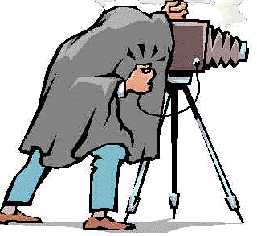
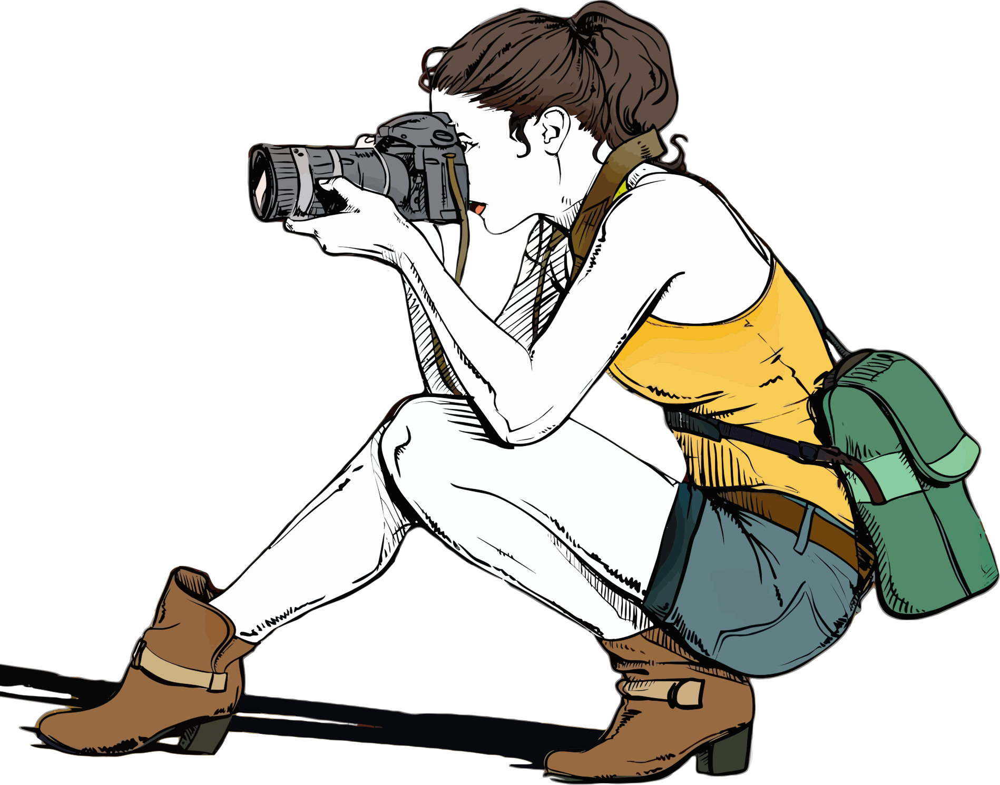
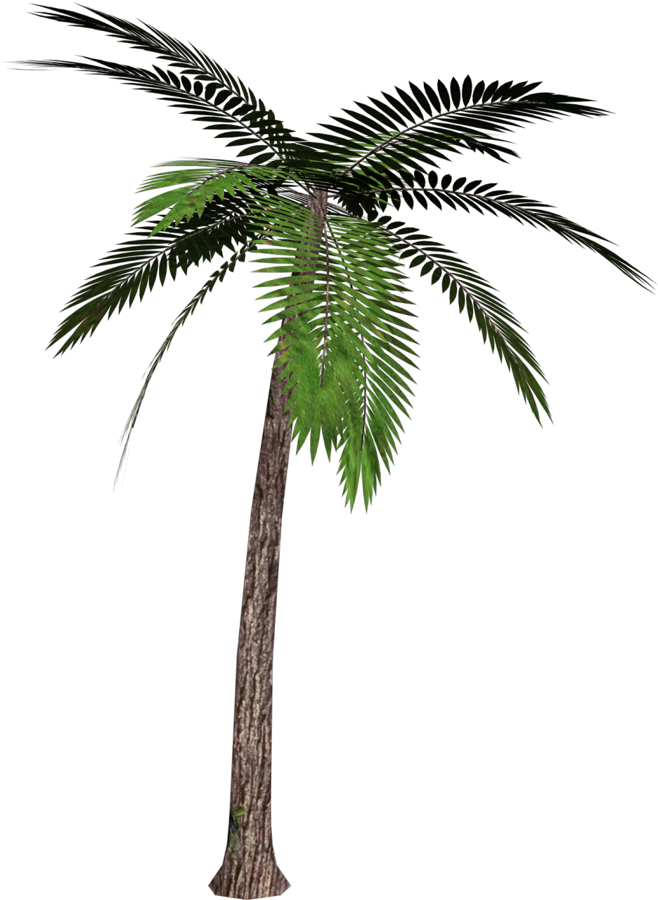
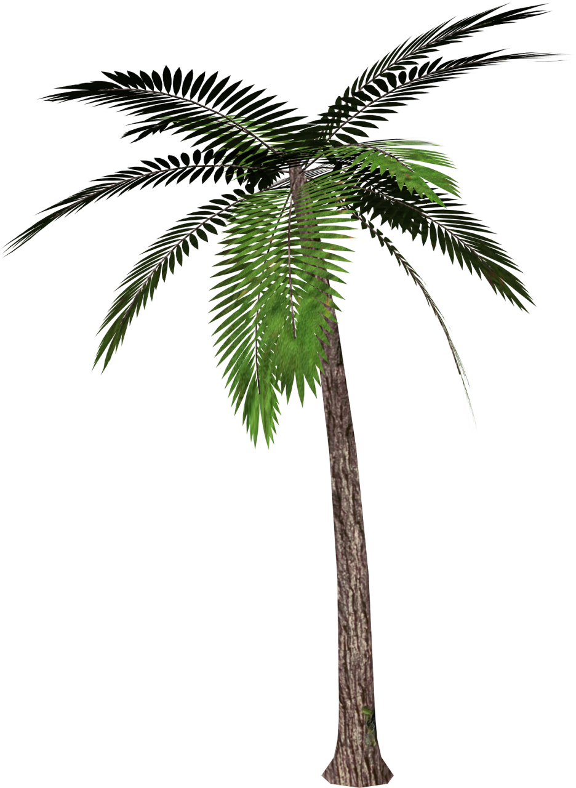

Quando la sera, dopo
una stressante giornata lavorativa,
prendi la macchina fotografica ed esci in cerca di quell'atmosfera unica tipica del momento che precede
il
tramonto, le tensioni della vita quotidiana scompaiono. La fotografia ti permette infatti di vivere il
momento, concentrarti sul soggetto che vuoi immortalare e condividere con gli altri il tuo modo di
vedere il
mondo. Soprattutto la fotografia naturalistica è adatta ad abbattere lo stress e a dare sfogo alla tua
vena
artistica, poiché la natura è sempre fonte di nuove ispirazioni. Che tu ami fotografare paesaggi,
animali o
piante, fare foto è un ottimo modo per esprimere il tuo amore per la natura e passare del tempo all'aria
aperta.



STORIA...
La prima fotografia [Francia, 1826]

Preso da Nicéphore Niépce, questa è la prima fotografia mai
realizzata
che
esiste ancora. Chiamò il suo
metodo di eliografia (scrittura solare) e questa fotografia impiegò 8 ore di esposizione (quindi
luce solare
su entrambi i lati dell'edificio).
linciaggio dei giovani neri [Indiana 1930]

Questa fotografia è stata scattata dopo il linciaggio di due
giovani
neri
accusati di aver violentato una ragazza bianca. Sono stati impiccati da una folla di 10.000. I
volti
della folla sono molto eloquenti. Un terzo uomo è stato salvato dallo zio delle ragazze che ha
dichiarato di essere innocente.
Hitler a Parigi [Parigi, 1940]

Questa fotografia è stata scattata da Adolf Hitler in visita a
Parigi
con
il suo architetto Albert Speer, il 23 giugno 1940. L'esercito di Hitler aveva catturato Parigi e
Hitler andò ad ammirare la sua nuova città.
V-J Day [New York, 1945]

Questa è una delle fotografie più famose della Seconda Guerra
Mondiale. Il
soldato e l'infermiera sono sconosciuti ma la gente si è fatta avanti per rivendicare la fama.
Apparentemente l'infermiera ha schiaffeggiato il soldato subito dopo. L'evento fu la
celebrazione
della fine della guerra e fu scattato a Times Square da Alfred Eisenstaedt.
Impronta sulla Luna [Luna, 1969]

Il 20 luglio 1969, Neil Armstrong mise il piede sinistro sulla
rocciosa
Luna. Fu la prima impronta umana sulla Luna. Avevano preso delle telecamere con loro. Le prime
impronte sulla Luna saranno lì per un milione di anni. Questa fotografia è stata scattata da
Buzz
Aldrin.
Phan Thi Kim Phúc [Vietnam, 1972]

La ragazza al centro di questa fotografia è 9 anni olf Kim
Phúc. Sta
scappando da un attacco di napalm che ha causato gravi ustioni sulla schiena. Il ragazzo è suo
fratello maggiore. Entrambi sono sopravvissuti. Questa foto (di Huynh Cong Ut) divenne una delle
più
pubblicate della guerra del Vietnam.